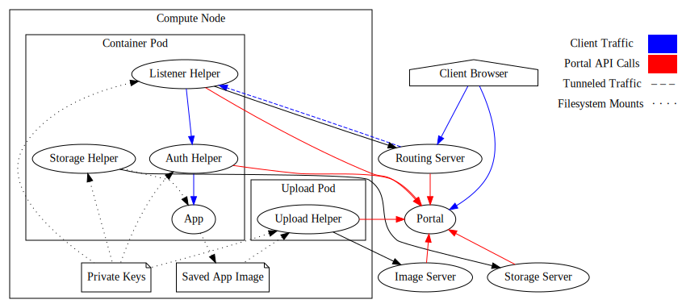

DIT4C Architecture
Basic Components
DIT4C has four core components:
- Portal
- Scheduler
- Routing server (can use ngrok in dev)
- Compute Node
This is enough to provide access to containerized tools to a user's web browser. Like Jupyter Hub, but able to run more than Jupyter.
The portal and routing server are the only components directly accessed by users. The scheduler and compute node can live on a private network without open ports (even a home router using NAT!).
Optional Components
In addition, DIT4C can be run with a:
- Image server
- Storage/file server (experimental)
An image server provides a mechanism for saving resulting container images. This allows a user to checkpoint their work in case of hardware failure, share images with other users, and generally use the system for more long-term work.
A file server provides shared persistent storage between different user instances. A user can copy outputs from one research tool to storage, and then use them from another instance. It appears as a simple file-system mount under /mnt.

Both services rely on the portal to authenticate access to them. No direct user interaction happens with them, so they don't need to be public to the internet, but they do need to be accessible from all compute nodes and the portal.
Pod Components
Each container instance runs in a pod with a number of helper containers. This allows a compute node to avoid installing any software that needs maintenance or detailed configuration.
- Listener helper - listeners for traffic sent to a public routing server.
- Auth helper - reverse proxy which authenticates traffic before sending to the user container instance. It acts as an OAuth 2 client against the portal's OAuth 2 server.
- Storage helper - mounts persistent remote storage into the user container instance.
- Upload helper - once the instance has terminated, this helper uploads the saved image to the image server.

Listener Helper
The listener helper is responsible for exposing the app to the rest of the world. It connects to an external public routing server and forwards all incoming traffic to the app instance via the auth helper. Once connected, the listener is responsible for informing the portal of its public URL.
Auth Helper
The listener helper is responsible for ensuring that traffic to the app is from an authorized source. It connects to the DIT4C portal and carries out OAuth 2 authentication of the user. Once authentication is confirmed, it provides the client with a session cookie and forwards all traffic associated with that session to the app instance.
Storage Helper
The storage helper mounts remote user storage and exposes it to the app instance. The file server is responsible for authenticating the storage helper connection by looking up the published instance public keys from the portal.
Upload Helper
The upload helper sends the saved app instance image to the image server. The scheduler provides a target URL which includes authentication details, and the image server authenticates connections by passing request headers to portal.
Further Detail
See "installation guide" for further details on how the components fit together.